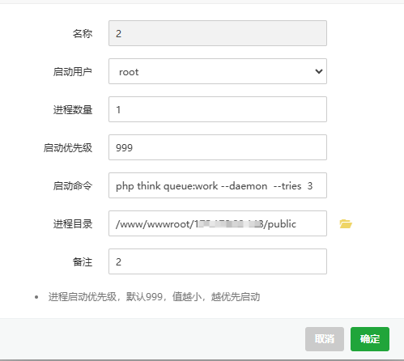

他强由他强，清风拂山岗；他横由他横，明月照大江。
工具收集
一、图像/绘图/设计工具
| 工具 | 简介 | 链接 |
|---|---|---|
| Sketchbook | 绘图工具 | https://sketchbook.com/ |
| GIMP | 免费开源图像处理创作工具 | https://www.gimp.org/ |
| Excalidraw | 手绘风格白板绘图 | https://excalidraw.com/ |
| Draw.io / Diagrams | 流程图、架构图绘制 | https://app.diagrams.net/ |
| GitMind | 思维导图 | https://gitmind.cn/ |
| Pixeur | Mac屏幕取色工具 | https://apps.apple.com/my/app/pixeur-get-screen-color/id1507890049?mt=12 |
| GifCam | Windows GIF录制制作 | http://blog.bahraniapps.com/gifcam/ |
二、接口&HTTP调试工具
| 工具 | 简介 | 链接 |
|---|---|---|
| Postman | API协作平台，接口调试、自动化测试、文档 | https://www.getpostman.com/ |
| ApiPost | 国产API接口调试工具 | https://www.apipost.cn/ |
| HTTPie | 命令行HTTP客户端 | https://httpie.io/ |
| jq | 命令行JSON解析处理 | https://stedolan.github.io/jq/ |
| fx | 交互式JSON查看工具 | https://github.com/antonmedv/fx |
三、版本控制 & Git/SVN
| 工具 | 简介 | 链接 |
|---|---|---|
| Sourcetree | 图形化Git客户端（Mac/Windows） | https://www.sourcetreeapp.com/ |
| TortoiseGit | Windows Git图形客户端 | https://tortoisegit.org/ |
| TortoiseSVN | Windows SVN图形客户端 | https://tortoisesvn.net/index.zh.html |
| tig | 终端Git浏览器 | https://github.com/jonas/tig |
四、数据库客户端
| 工具 | 简介 | 链接 |
|---|---|---|
| DBeaver | 跨平台通用数据库管理工具 | https://dbeaver.io/ |
| Sequel Pro | Mac MySQL管理工具 | https://sequelpro.com/test-builds |
| AnotherRedisDesktopManager | Redis可视化客户端 | https://github.com/qishibo/AnotherRedisDesktopManager/ |
| Robo 3T | MongoDB可视化工具 | https://robomongo.org/download |
| mycli | 终端MySQL客户端 | https://github.com/dbcli/mycli |
| ClickHouse | 列式数据库，中文文档 | https://clickhouse.com/docs/zh/ |
五、终端 / SSH / 远程连接
| 工具 | 简介 | 链接 |
|---|---|---|
| iTerm2 | Mac终端增强工具 | https://iterm2.com/ |
| Oh My Zsh | zsh终端美化&插件框架 | https://ohmyz.sh/ |
| tmux | 终端会话复用工具 | https://www.ruanyifeng.com/blog/2019/10/tmux.html |
| SecureCRT | SSH远程连接客户端 | https://www.vandyke.com/products/securecrt/ |
| PuTTY | 轻量Windows SSH工具 | https://www.chiark.greenend.org.uk/~sgtatham/putty/ |
| ranger | 终端文件管理器 | https://github.com/ranger/ranger |
| ncdu | 终端磁盘占用分析 | https://dev.yorhel.nl/ncdu |
六、代码阅读 & Vim编辑器系列
| 工具 | 简介 | 链接 |
|---|---|---|
| SourceInsight | 源码阅读工程工具 | https://www.sourceinsight.com/ |
| MacVim | Mac平台Vim | https://github.com/macvim-dev/macvim/releases |
| NeoVim | 现代重构版Vim | https://neovim.io/ |
七、文件对比 & 进程管理
| 工具 | 简介 | 链接 |
|---|---|---|
| Beyond Compare | 文件/文件夹对比工具 | https://www.scootersoftware.com/ |
| kdiff3 | 开源文件差异对比 | https://sourceforge.net/projects/kdiff3/files/ |
| supervisor | Python编写进程守护，异常自动重启 | http://supervisord.org/ |
八、Mac 专用工具
| 工具 | 简介 | 链接 |
|---|---|---|
| Gas Mask | Mac hosts管理工具 | https://mac.softpedia.com/get/Utilities/Gas-Mask.shtml |
| AppCleaner | Mac软件卸载清理残留 | http://freemacsoft.net/appcleaner/ |
| The Unarchiver | Mac解压工具 | https://www.theunarchiver.com/ |
| Macs Fan Control | Mac风扇转速控制 | https://crystalidea.com/macs-fan-control/download |
| mac-data-retriever | Mac数据恢复，尝试拯救rm -rf误删 | https://www.stellarinfo.com/gdc/mac-data-recovery/ |
| macwk | Mac软件资源站 | https://www.macwk.com/ |
| Lemon（腾讯柠檬清理） | Mac系统清理工具 | https://lemon.qq.com/ |
九、网络测试 & VPN工具
| 工具 | 简介 | 链接 |
|---|---|---|
| iperf | 网络带宽性能测试工具 | https://iperf.fr/ |
| AnyConnect | Cisco VPN客户端 | https://www.cisco.com/c/en/us/support/security/anyconnect-secure-mobility-client-v4-x/model.html |
| Tunnelblick | Mac OpenVPN客户端 | https://tunnelblick.net/ |
| Psiphon | 网络工具 | https://www.psiphon3.com/zh/index.html |
十、开发类库
| 库名称 | 简介 | 链接 |
|---|---|---|
| libiconv | 字符编码转换库 | http://www.gnu.org/software/libiconv/ |
| libxml2 | XML解析库 | http://xmlsoft.org/ |
十一、在线小工具
| 工具 | 简介 | 链接 |
|---|---|---|
| FloatConverter | IEEE754浮点数在线计算器 | https://www.h-schmidt.net/FloatConverter/IEEE754.html |
| lottery | 在线抽奖工具 | shturl.cc/I81XM6zb5wG5kYdiq5k9nCv |
| Graph-Easy | 文本绘图，生成关系图 | https://metacpan.org/pod/Graph::Easy |
| Swiftype | 站内搜索服务 | https://swiftype.com/ |
十二、前端资源
| 资源 | 简介 | 链接 |
|---|---|---|
| Font Awesome | 图标库 | http://www.fontawesome.com.cn/ |
| BootCDN | 国内开源静态资源CDN | https://www.bootcdn.cn/ |
十三、爬虫项目
| 项目 | 简介 | 链接 |
|---|---|---|
| templatespider | 扒网站工具 | https://github.com/xnx3/templatespider |
| EasySpider | 可视化爬虫 | https://github.com/NaiboWang/EasySpider |
| proxy_pool | 代理IP池 | https://github.com/jhao104/proxy_pool |
| python-spider | Python爬虫项目 | https://github.com/Jack-Cherish/python-spider |
十四、开发文档 & 资料
| 名称 | 简介 | 链接 |
|---|---|---|
| 钉钉自定义机器人 | 钉钉机器人开发文档 | https://developers.dingtalk.com/document/app/custom-robot-access |
| 191本计算机黑皮书 | 计算机书籍资源，阿里云盘，提取码：57ch | https://www.aliyundrive.com/s/PdALTScJKt2 |
十五、其他
| 工具 | 简介 | 链接 |
|---|---|---|
| Jinja | Jinja模板文档 | http://docs.jinkan.org/ |
| 飞书 | 协作办公平台 | https://www.feishu.cn/ |
ansible
一、基础
ansible是一种自动化运维工具，基于Python开发，集合了众多运维工具(puppet、chef、func、fabric)的优点，实现了批量系统配置、批量程序部署、批量运行命令等功能。
二、使用
Mac
安装
- brew安装
brew install ansible，本文使用brew安装 - pip安装
pip install ansible - 源码安装
- git clone https://github.com/ansible/ansible.git
- cd ansible
- sudo python setup.py install
- brew安装
验证
ansible --version1
2
3
4
5
6
7
8
9ansible [core 2.11.6]
config file = None
configured module search path = ['/Users/xxxx/.ansible/plugins/modules', '/usr/share/ansible/plugins/modules']
ansible python module location = /usr/local/Cellar/ansible/4.8.0/libexec/lib/python3.10/site-packages/ansible
ansible collection location = /Users/xxxx/.ansible/collections:/usr/share/ansible/collections
executable location = /usr/local/bin/ansible
python version = 3.10.0 (default, Oct 13 2021, 06:44:31) [Clang 12.0.0 (clang-1200.0.32.29)]
jinja version = 3.0.2
libyaml = True配置
cd /etcsudo mkdir ansiblegit clone https://github.com/ansible/ansible.git && cd ansiblesudo cp -R * /etc/ansible生成秘钥：
ssh-keygen将秘钥推送到指定服务器：
机器1：
ssh-copy-id username@ip1机器2：
ssh-copy-id username@ip2机器3：
ssh-copy-id username@ip3公司本地开发服务器，一般会有多个人一起协作，按此方式推送的话有可能会覆盖别人的秘钥，按如下方式处理：
ssh-keygen时输入自定义的名字
- Enter file in which to save the key (/Users/xxxx/.ssh/id_rsa):id_rsa_play
此时会在.ssh目录下生成一对儿
id_rsa_play和id_rsa_play.pubvim config
1
2
3
4
5
6
7
8
9
10
11
12
13
14
15
16
17Host server1 #填写别名(自定义)
HostName ip1 #填写真实的服务地址
User user1
IdentityFile /Users/xxxx/.ssh/id_rsa_play #填写证书所在位置
PreferredAuthentications publickey
Host server2
HostName ip2
User user2
IdentityFile /Users/xxxx/.ssh/id_rsa_play
PreferredAuthentications publickey
Host server3
HostName ip3
User user3
IdentityFile /Users/xxxx/.ssh/id_rsa_play
PreferredAuthentications publickey
1
2
3
4
5
6
7
8
9
/usr/bin/ssh-copy-id: INFO: Source of key(s) to be installed: "/Users/username/.ssh/id_rsa.pub"
/usr/bin/ssh-copy-id: INFO: attempting to log in with the new key(s), to filter out any that are already installed
/usr/bin/ssh-copy-id: INFO: 1 key(s) remain to be installed -- if you are prompted now it is to install the new keys
username@ip's password:
Number of key(s) added: 1
Now try logging into the machine, with: "ssh 'username@ip'"
and check to make sure that only the key(s) you wanted were added.
* 测试免密登录`ssh username@ip`，登录成功则说明配置成功
* 修改配置文件`vim /etc/ansible/hosts`
1
2
3
4
5
6
[host1]
10.2.24.180
10.2.24.179
[host2]
10.2.24.141
使用
测试能否ping通
ansible all -m ping1
2
3
4
5
6
7
8
9
10
11
12
13
14
15
16
17
18
19
20
21ip1 | SUCCESS => {
"ansible_facts": {
"discovered_interpreter_python": "/usr/bin/python"
},
"changed": false,
"ping": "pong"
}
ip2 | SUCCESS => {
"ansible_facts": {
"discovered_interpreter_python": "/usr/bin/python"
},
"changed": false,
"ping": "pong"
}
ip3 | SUCCESS => {
"ansible_facts": {
"discovered_interpreter_python": "/usr/bin/python"
},
"changed": false,
"ping": "pong"
}ansible host1 -a ". .bash_profile;ps -fe |grep php" -m shell- 查看具体执行过程
ansible host1 -a ". .bash_profile;ps -fe |grep php" -m shell -vvv - 指定hosts文件位置
ansible -i /path/hosts host1 -a ". .bash_profile;ps -fe |grep php" -m shell -vvv - ansible -i ~/tools/hosts host1 -m fetch -a “src=/home/xxx/*.txt dest=./ force=yes”
- 查看具体执行过程
执行scripts``
playbook
$a = exec(“/path/Python-2.7.8/bin/ansible -i /path/hosts -m copy -a "src=/path/test.php dest=/path/" global”, $out, $status);
$a = exec(“/paty/Python-2.7.8/bin/ansible -i /path/hosts -m synchronize -a "src=/path/test.php dest=/path/" global”, $out, $status);
- Linux
- 安装(Ubuntu22.04)
- sudo apt update
- sudo apt install software-properties-common
- sudo add-apt-repository –yes –update ppa:ansible/ansible
- sudo apt install ansible
- ansible –version
- 配置
- /etc/ansible/hosts，节点信息
- /etc/ansible/ansible.cfg，配置信息，如秘钥文件
- 使用
- 集群假设有1台admin节点3台服务节点，直接在admin节点修改3台服务节点的时间
- 安装(Ubuntu22.04)
三、扩展
- rsync
四、参考
rsync
一、概念
rsync是类unix系统下的数据镜像备份工具，从软件的命名上就可以看出来了——remote sync。它不仅可以远程同步数据(类似于scp命令)，还可以本地同步数据(类似于cp命令)。不同于cp或scp的一点是，使用rsync命令备份数据时，不会直接覆盖以前的数据(如果数据已经存在)，而是先判断已经存在的数据和新数据的差异，只有数据不同时才会把不相同的部分覆盖。
二、使用
本地同步
- 本地之间备份同步
rsync -avz /home/www/rsync_test /www
- 本地之间备份同步
远程同步
- 本地文件上传到远程服务器：
rsync -avz -e "ssh -i /root/xxx.pem" /home/www/rsync_test root@ip:/home/www/ - 远程服务器文件下载到本地：
rsync -avz -e "ssh -i /root/xxx.pem" root@ip:/home/www/test /root - 跨服务器同步(无需本地中转)：
rsync -avz -e "ssh -i /root/xxx.pem -p 22" root@ip1:/home/source/ root@ip2:/home/dest
- 本地文件上传到远程服务器：
高级使用
- 指定秘钥
- 增量备份
- 排除文件
- 包含特定
- 限速传输
- 校验模式
- 保留符号链接
三、扩展
- sync
- ansible
四、参考
supervisor
一、基础
supervisor是一个客户/服务器系统，它可以在类Unix系统中管理控制大量进程。它使用python开发，有多年历史，目前很多生产环境下的服务器都在使用supervisor。
supervisor的服务器端称为supervisord，主要负责在启动自身时启动管理的子进程，响应客户端的命令，重启崩溃或退出的子进程，记录子进程stdout和stderr输出，生成和处理子进程生命周期中的事件。可以在一个配置文件中配置相关参数，包括supervisord自身的状态，其管理的各个子进程的相关属性。
supervisor的客户端称为supervisorctl，它提供了一个类shell的接口来使用supervisord服务端提供的功能。通过supervisorctl，用户可以连接到supervisord服务器进程，获得服务器进程控制的子进程的状态，启动和停止子进程，获得正在运行的进程列表。客户端通过Unix域套接字或者TCP套接字与服务端进行通信，服务器端具有身份凭证认证机制，可以有效提升安全性。当客户端和服务器位于同一台机器上时，客户端与服务器共用同一个配置文s件/etc/supervisord.conf，通过不同标签来区分两者的配置。
另外，supervisor也提供了一个web页面来查看和管理进程状态。
常用命令：
- supervisorctl status
- supervisorctl start laravel-queue-worker #启动laravel-queue-worker
- supervisorctl stop laravel-queue-worker #停止laravel-queue-worker
- supervisorctl restart laravel-queue-worker # 重启laravel-queue-worker
- supervisorctl update # 配置文件修改后可以使用该命令加载新的配置
- supervisorctl reload # 重新启动配置中的所有程序
- supervisorctl -u user -p 123 status
二、使用(Mac)
- 使用brew安装：brew install supervisor
- 默认配置文件：/usr/local/etc/supervisord.conf
- 查看安装是否成功：echo_supervisord_conf
- 切换到配置目录：cd /usr/local/etc/
- tail supervisord.conf，可看到：files = /usr/local/etc/supervisor.d/*.ini
- 创建文件夹：mkdir supervisor.d，可以放多个配置
- 编辑supervisord.conf文件，打开[inet_http_server]的注释(即删掉前面的分号)
1 | [inet_http_server] ; inet (TCP) server disabled by default |
- cd supervisor.d
- vim laravel.ini
1 | [program:laravel-queue-worker] ;唯一标识，不能重复 |
ps -ef|grep supervisord
- /www/server/panel/pyenv/bin/python /www/server/panel/pyenv/bin/supervisord -c /etc/supervisor/supervisord.conf
常见错误
- unix:///usr/local/var/run/supervisor.sock no such file
- supervisor: couldn’t setuid to 0: Can’t drop privilege as nonroot user
三、使用(Linux+宝塔)
- 安装
- 登录宝塔
- 软件商店
- 搜索supervisor，找到后点击安装
- 使用
- 点击设置
- 添加守护进程

- 主配置文件
1 | ; Sample supervisor config file. |
- 守护进程配置文件:cd /www/server/panel/plugin/supervisor/profile/
1 | [program:2] |
- 启动服务
四、参考
Selenium
一、概念
- Selenium，浏览器自动化测试框架，是一个用于Web应用程序测试的工具。Selenium测试直接运行在浏览器中，就像真正的用户在操作一样。支持的浏览器包括IE(7,8,9,10,11)，Mozilla Firefox，Safari，Google Chrome，Opera等。
- 这个工具的主要功能包括：
- 测试与浏览器的兼容性——测试你的应用程序看是否能够很好得工作在不同浏览器和操作系统之上。
- 测试系统功能——创建回归测试检验软件功能和用户需求。
- 支持自动录制动作和自动生成.Net、Java、Perl等不同语言的测试脚本。
二、mac下安装
- sudo easy_install selenium
三、使用
- 待补充
宝塔
一、介绍
二、使用
- 安装
- 通用安装脚本
- CentOS/OpenCloudOS/AlibabaCloudOS脚本
- Ubuntu/Deepin脚本


- 使用
- 通过管理后台
- 通过命令行


- 部署服务，以php为例


- 卸载
- 手动卸载
- /etc/init.d/bt stop && rm -f /etc/init.d/bt && rm -rf /www/server/panel
- 使用脚本
- wget http://download.bt.cn/install/bt-uninstall.sh
- sh bt-uninstall.sh